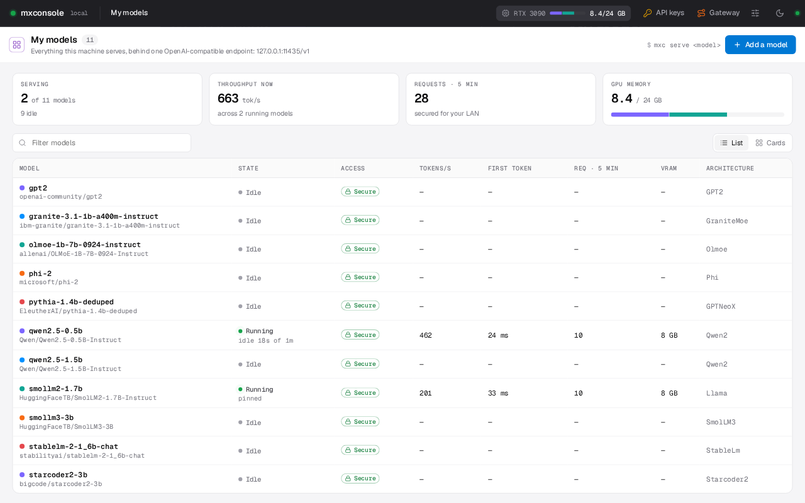
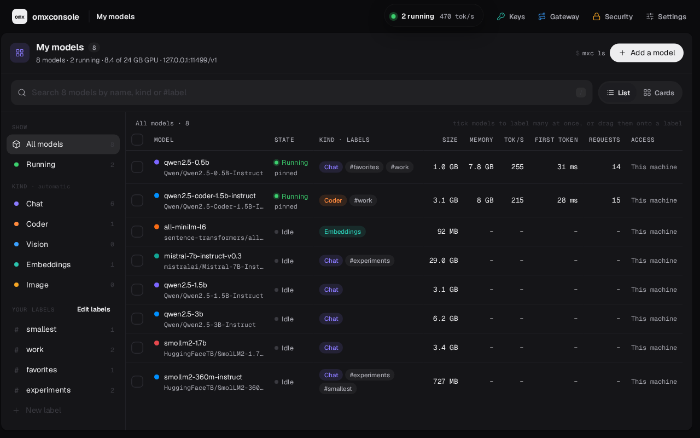

Local AI on Modular MAX, made easy.
A convenience wrapper around MAX. One command gives you an OpenAI-compatible endpoint. Models load when they're called and unload when idle. If MAX can't run a model yet, omxconsole can port it.
$ git clone https://github.com/abhisheksreesaila/mxstudio.git $ cd mxstudio $ pixi install $ pixi run mxc serve qwen2.5-0.5b


Small models, served properly.
Everything MAX needs to feel like a local service: one endpoint, models that come and go on demand, keys, and a way through when MAX can't run a model yet.
Local AI, easy
mxc serve downloads, starts and prints a URL, a key and a curl line. Any OpenAI client works.
Many models, one endpoint
Each model starts on its first request and unloads when idle. GPU memory goes only to the models in use. Pin the ones you need kept loaded.
Safe to share
One revocable key per app. mxc expose serves it over HTTPS on your LAN.
Porting, fast
For an architecture MAX can't run yet, Claude Code writes a MAX version in a sandbox, and omxconsole checks it against the original. Behind the scenes.
How a request travels
Pick where the call comes from and whether the model is already loaded, then press Play.
base_url and a key from mxc keys new./v1 routes.keep_alive idle (default 5 minutes) unless pinned.The console at /console and the /admin routes only answer on this machine. From the LAN, only
/v1/models, /v1/chat/completions, /v1/completions and /v1/embeddings get through.
More
Console tour
Every screen, from real screenshots, with what each part means and the matching command.
Porting, behind the scenes
What mxc port --auto does step by step, what it checks, and what can come back.
CLI reference ↗
Every mxc command and option.
HTTP API ↗
The OpenAI-compatible endpoints, in one table.